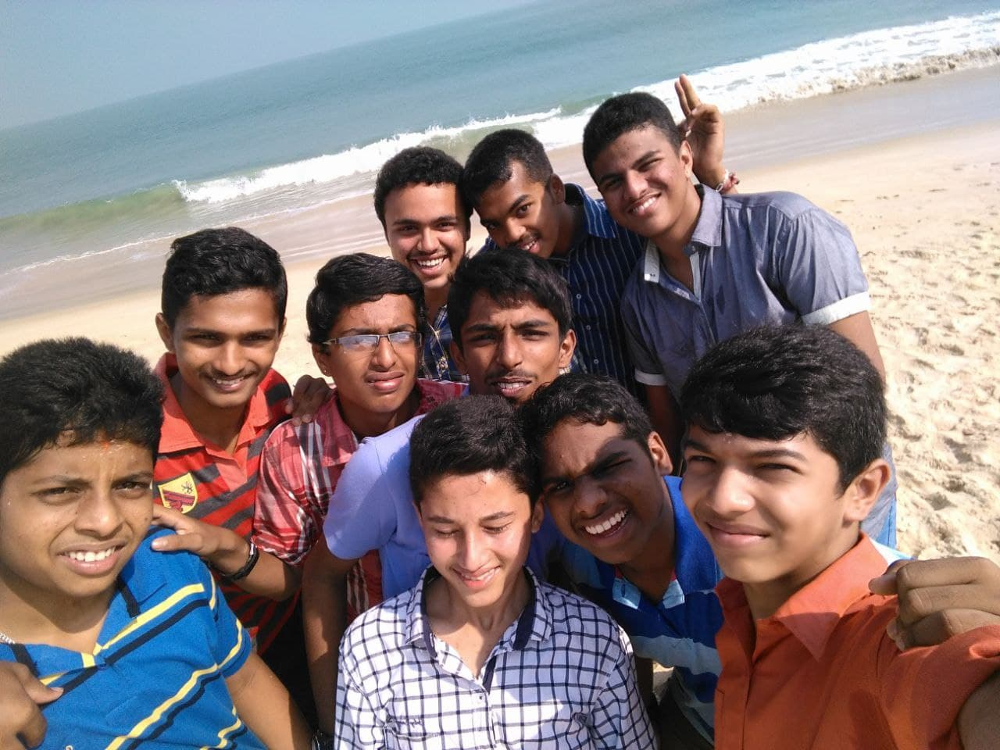
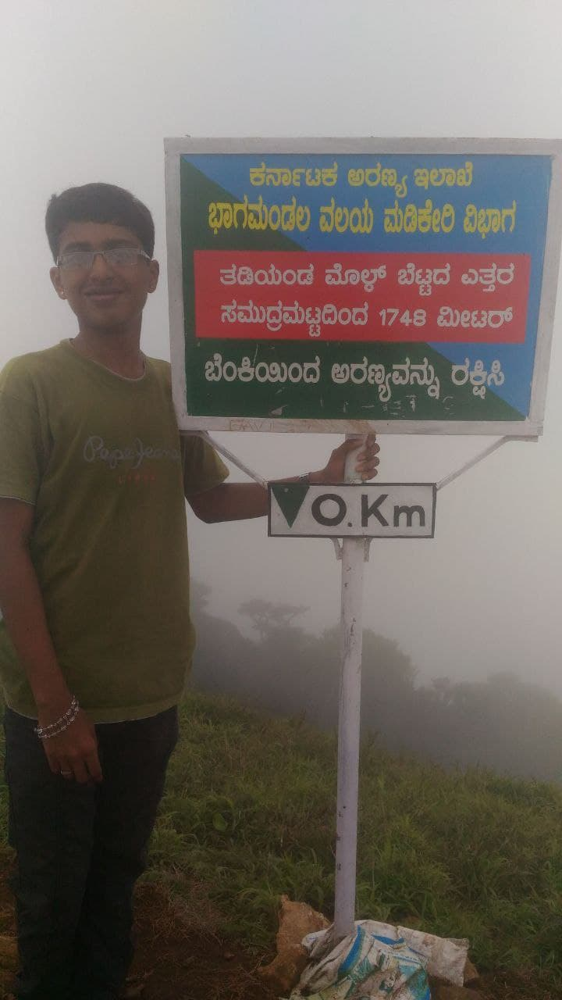
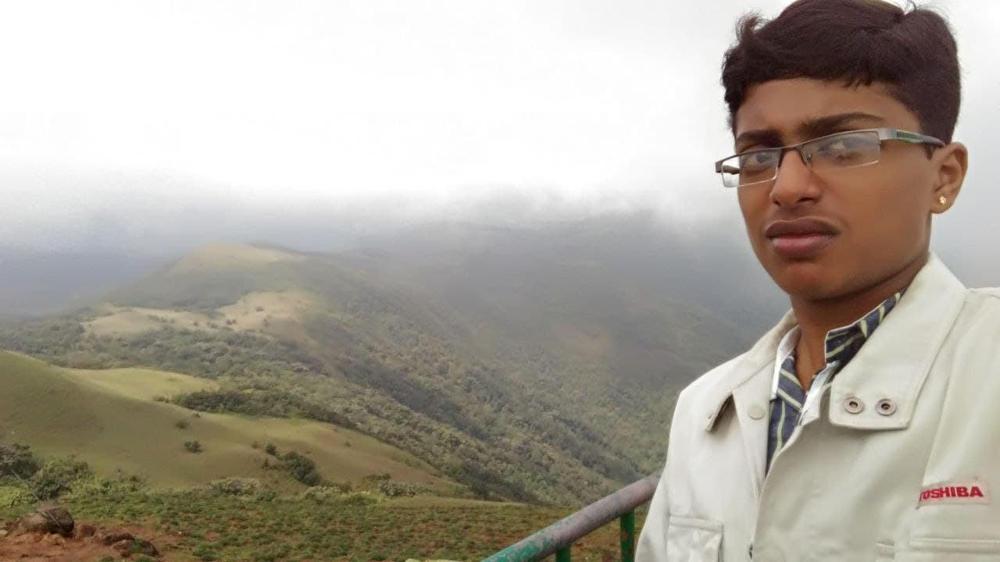
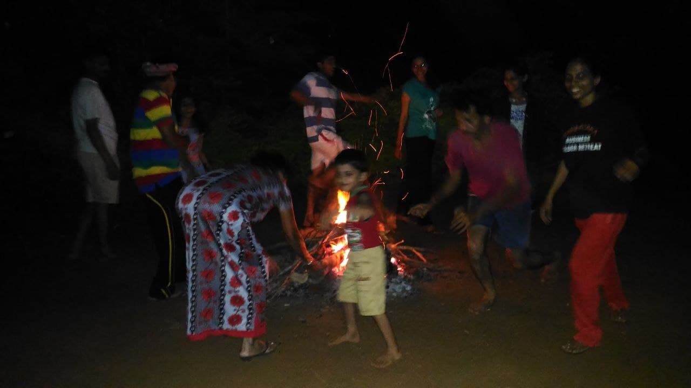
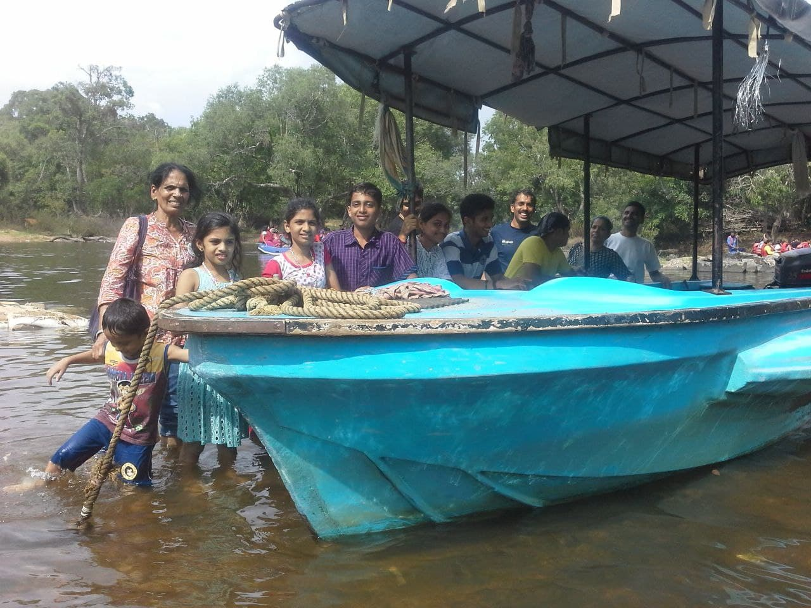
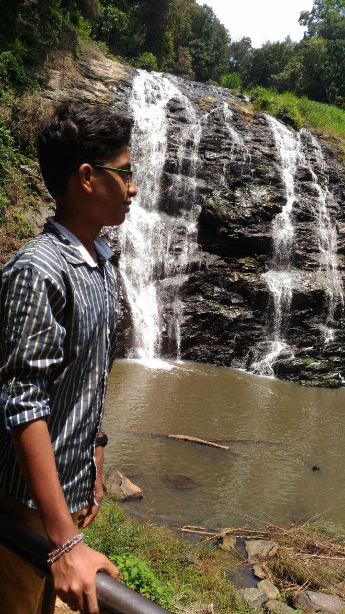
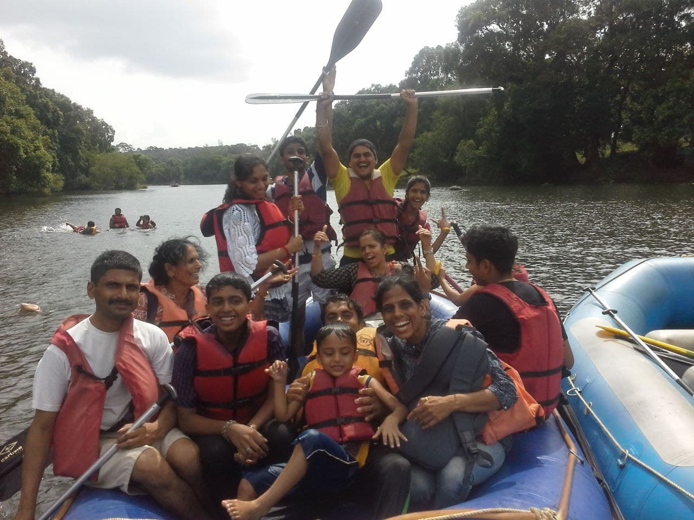
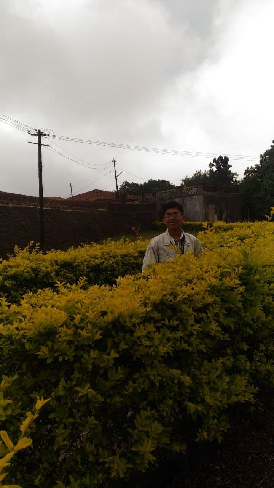

Ecological sustenance and the Inclusive nature of spiritual process are inseperable
17,18 & 19th July 2018 - Isha Foundation & Vellianagiri Hills(Kailash of the South)(Sapthagiri)
Coiambatore Railway StationVelliangiri / Sapthagiri / Kailash of South: Trekking Velliangiri Hills. these mountains are held and revered on par with spiritually most powerful place on the planet - Mount Kailash, the legendary abode of Lord Shiva. On the top of the Velliangiri Mountains, Shiva is worshipped as Swayambhu, one who is self-created and in this form, he graces the devotees.Adiyogi Shiva Statue: Adiyogi refers to "the first yogi" or Shankar as the first yogi. It was established to inspire people towards inner well-being through yoga.Me and my friends near the clock tower, Coiambatore Railway Station
We resting on the way to 7th peak of SapthagiriAdiyogi: Adiyogi is 112ft tall statue of Shiva. 112 feet represents 112 possibilitis to attain moksha/liberation. It is recognized by the Guninness World Records as the "Largest Bust Sculpture".Infront of Dhyanalinga: “Dhyana” in Sanskrit means meditation and “linga” means the form. Dhyanalinga is a profound meditative space that does not ascribe to any particular belief or faith, and requires no ritual, prayer or worship. A powerful and unique energy form, Dhyanalinga is a doorway to enlightenment and spiritual liberation. In the metaphysical sense, Dhyanalinga is a guru, offering spiritual seekers the opportunity to do spiritual practices in the utmost intimacy of a live guru, something traditionally available only to a few.Sarpa Vasal, Isha Foundation: Enterance to Isha foundation. In yogic culture, the snake, particularly cobra, is a symbol of perception.
29, 28th June 2018 - Dandeli
Somewhere between the Jungles of Dandeli with my Uncle and their family Cycling in the early morning near our resort stay
Enjoying after rafting in the river KaliRiver rafting, Just floating over the river, joyfull experience
25th Dec 2016 - Hejamadi Beach, Udupi

Me and my School friends while I was in SSLC
29, 30th May 2016 - Kodagu

Tadiandamol: This is the highest mountain of Madikeri in Kodagu. It is the third highest peak in Karnataka. It reaches an elavation of 1748 m

Mandalpatti: It is crowned at a height of 1600m. It is 25 to 30 km away from Madikeri town.

Firecamp in our resort at coldnight

Dubare Elephant Camp: It is the place where elephants used to be trained for Mysore Dussehra.

Abbey Falls: The waterfall is on the early reaches of the river Kaveri, located between private coffee plantations with stocky coffee bushes and spice estates and trees entwined with pepper vines. There is a hanging bridge constructed just opposite the falls. Flow is much higher during the monsoon season

Dubare: Boating

Madikeri fort (Rajaseth): Madikeri Fort also called Mercara Fort is a fort in Madikeri, in the Kodagu district
.jpg)
.jpg)
.jpg)
.jpg)
.jpg)
.jpg)
.jpg)
.jpg)
.jpg)
.jpg)
.jpg)
.jpg)